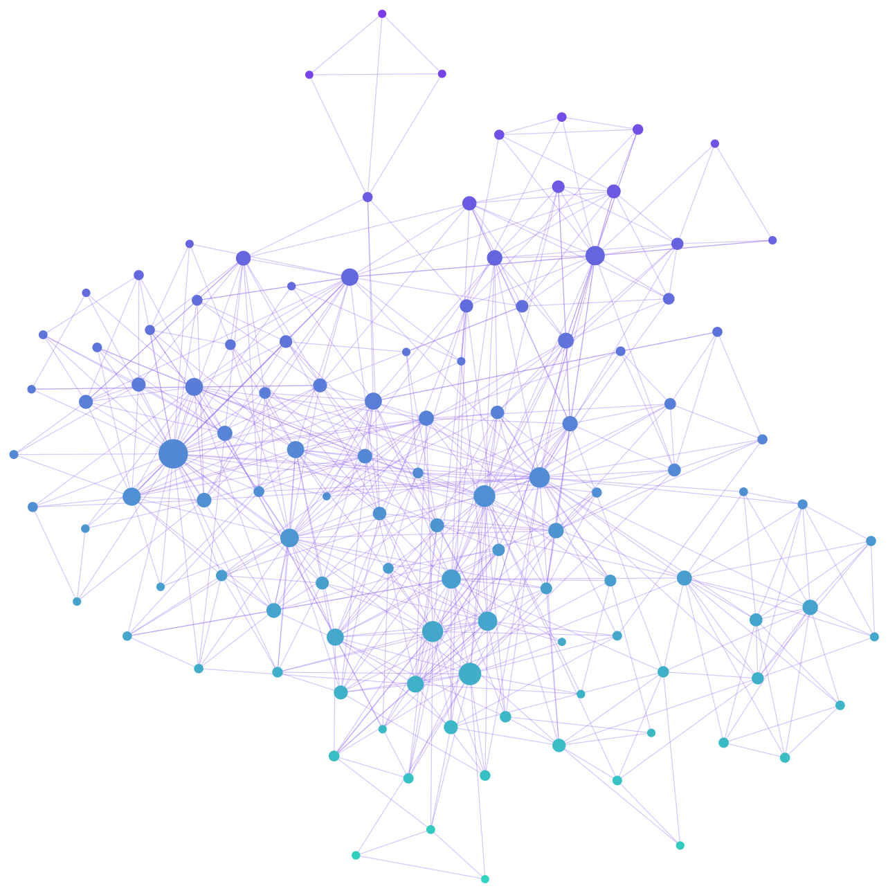

AI Second Brain
July 2026
A personal knowledge base where I bring the material and an AI agent does the writing. I feed it articles, videos and my own raw thoughts; the agent turns them into wiki pages, links everything together and keeps it all up to date. I browse the result in Obsidian like a map of what I know.
The idea
Most note-taking systems die the same way: saving things is easy, but keeping them organized, linked and current is tedious, so the notes go stale and nobody reads them again. The work that kills a second brain is exactly the work an AI agent is good at.
So I split the roles. The project follows the LLM Wiki pattern shared by Andrej Karpathy: instead of searching raw documents every time (as classic RAG does), an agent builds and maintains a lasting wiki of Markdown pages, so knowledge adds up instead of being rediscovered.
- Choose what is worth keeping
- Write my thoughts freely, however messy
- Ask questions
- Decide the judgment calls
- Read and summarize every source
- Write and update all the wiki pages
- Link related pages in both directions
- Keep the index and the history log current
Three layers
The vault is a folder of Markdown files with three layers, each with a clear owner:
areas/entities/concepts/sources/notes/index.mdlog.mdA map of connected ideas
Because the agent links every page to the pages it relates to, the vault grows into a network rather than a pile of notes. This is its real graph in Obsidian: each dot is a page, each line a link the agent wrote, and the biggest dots are the hubs that many ideas lead back to.

The vault's graph in September 2026, about three months in. Page names are hidden to keep its content private.
How I use it
- I clip an article with the Web Clipper extension, or write a thought
- We discuss the key takeaways first
- The agent writes a summary page
- It updates every related page
- Index and log updated, then a commit
- The agent starts from the index
- It reads the relevant pages
- It answers with citations
- A good answer is filed back as a new note
- Contradictions never reconciled
- Claims made stale by newer sources
- Orphan pages and missing links
- Fixes the obvious, asks me about the rest
Philosophy
Tech stack
AGENTS.md, through a tiny stub file when it expects another
name.